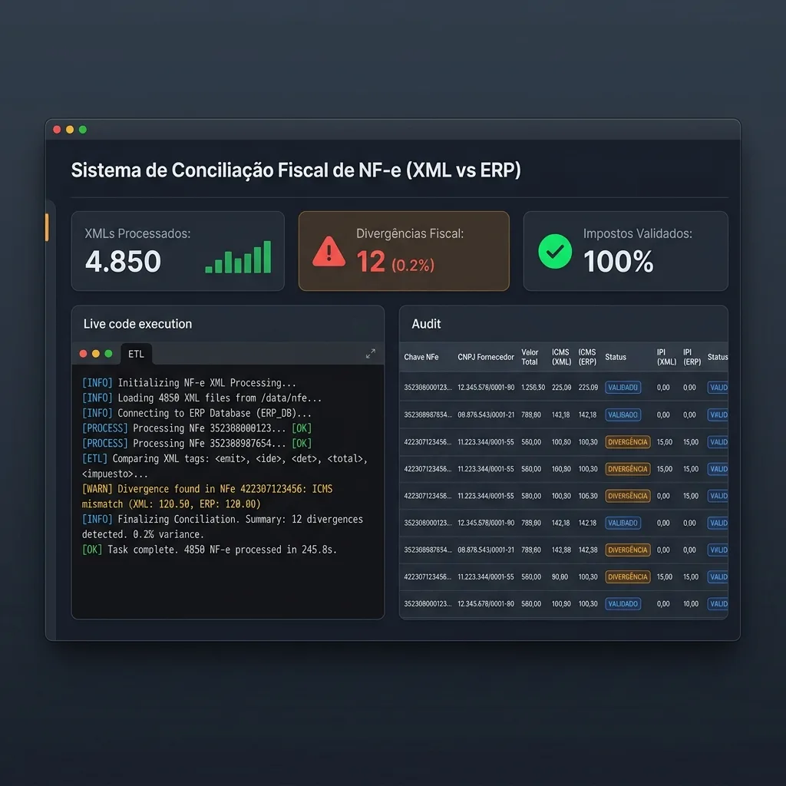

Conciliação Fiscal Automatizada de NF-e (XML vs ERP)
Script em Python para processamento massivo de arquivos XML de NF-e de entrada, extração de alíquotas de impostos (ICMS, IPI, PIS/COFINS) e validação contra o pedido de compras emitido no ERP.

1.000+ XML/Min
Extração automatizada de tags XML
95%
Redução de tempo no recebimento de materiais
Alerta 100%
Sinalização automática de discrepância de preço
description Metodologia de Automação ETL
O script lê diretórios contendo centenas de arquivos XML emitidos por fornecedores, faz a varredura das tags `nItemPed`, `vUnCom`, `vProd` e `vIPITrib`, estruturando os dados em um DataFrame Pandas e gerando um relatório em Excel formatado com destaques visuais para itens divergentes.
terminal Regra de Negócio: Conciliação Automática
Após extrair os valores do XML, o motor cruza automaticamente contra o pedido gravado no ERP e sinaliza divergência de preço ou de ICMS acima de uma tolerância de centavos, eliminando a conferência manual nota a nota:
def conciliar_contra_erp(dados_xml, pedido_erp):
"""Cruza os dados extraídos do XML contra a Ordem de Compra do ERP"""
divergencia_preco = abs(dados_xml["valor_total_xml"] - pedido_erp["valor_total_erp"]) > 0.05
divergencia_icms = abs(dados_xml["valor_icms_xml"] - pedido_erp["valor_icms_erp"]) > 0.05
status = "DIVERGÊNCIA IDENTIFICADA" if (divergencia_preco or divergencia_icms) else "APROVADO"
return {"status_conciliacao": status, "divergencia_precos": divergencia_preco, "divergencia_impostos": divergencia_icms}
Informações do Projeto
Gostou desse case?
Vamos conversar sobre como aplicar essa mesma abordagem no seu time.